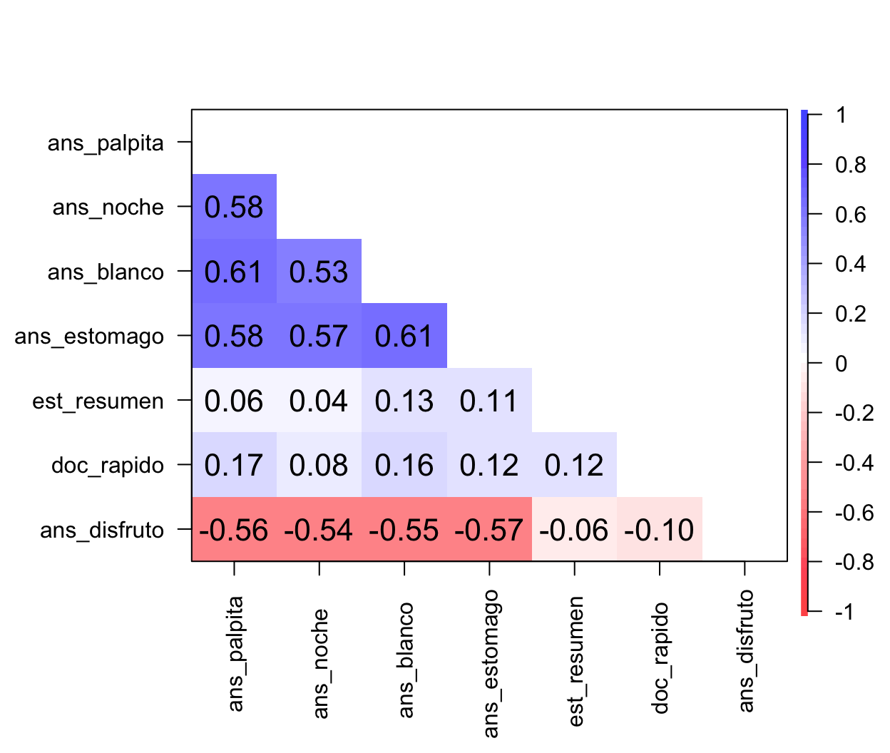
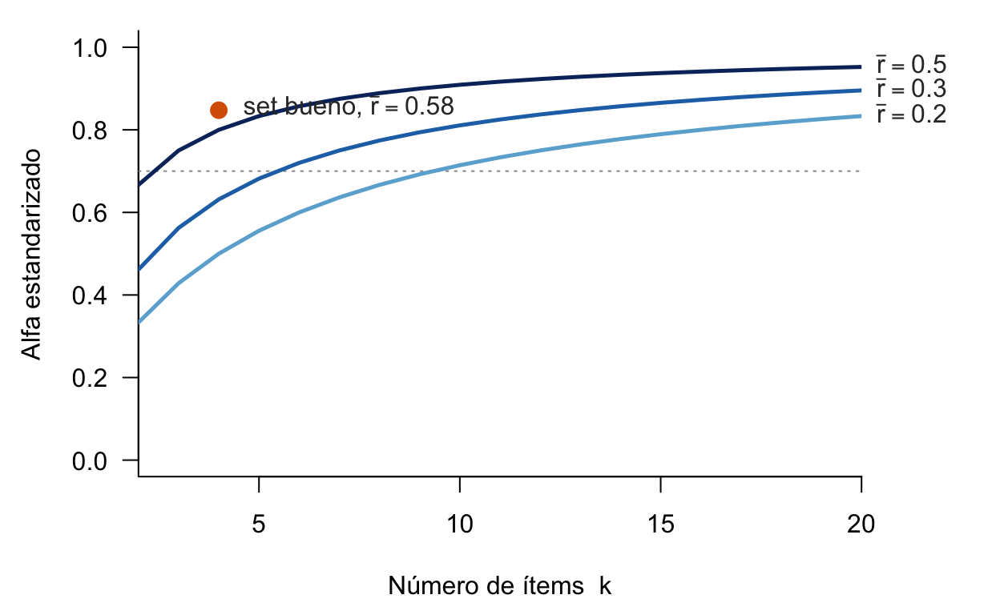

library(psych) # alpha() y corPlot()2 Confiabilidad y alfa de Cronbach
| Sección | Contenido | Datos |
|---|---|---|
| 1. Los datos | Siete ítems fabricados, con su verdad conocida | Simulación |
| 2. Confiabilidad | Puntaje verdadero y error; por qué promediar ayuda | Simulación |
| 3. Alfa de Cronbach | La fórmula, a mano y con psych::alpha |
Set bueno |
| 4. Cómo se rompe | Mezclar constructos, olvidar invertir, o las dos cosas | Sets malos |
| 5. Diagnóstico ítem por ítem | Correlación ítem-total corregida y alfa si se elimina | Los siete ítems |
| 6. Lo que alfa no dice | Unidimensionalidad, número de ítems, validez, muestra | Simulación |
| 7. En tu encuesta | De nodos.csv al alfa, en R y en Python |
Exportación |
2.1 Los datos
Fabricamos 300 estudiantes. A diferencia de una encuesta real, aquí sabemos cómo se generaron: tres constructos latentes (ansiedad ante los exámenes, estrategias de estudio y percepción de la docencia), levemente correlacionados, y siete ítems Likert construidos con el modelo del capítulo 1, \(X_j = \lambda_j\theta + \varepsilon_j\), cortado en cinco categorías.
| Columna | Ítem | Mide |
|---|---|---|
ans_palpita |
«Siento palpitaciones o tensión muscular minutos antes de iniciar un examen.» | Ansiedad |
ans_noche |
«Me cuesta concentrarme la noche previa a una prueba por el temor a reprobar.» | Ansiedad |
ans_blanco |
«Tengo la sensación constante de que me voy a quedar en blanco frente a la hoja.» | Ansiedad |
ans_estomago |
«La preocupación por las notas me genera malestar estomacal antes de rendir.» | Ansiedad |
est_resumen |
«Suelo preparar resúmenes y mapas conceptuales para estudiar.» | Estrategias de estudio |
doc_rapido |
«El profesor explica la materia de forma muy rápida y confusa.» | Percepción de la docencia |
ans_disfruto |
«Disfruto los días en que debo rendir evaluaciones.» | Ansiedad, invertido |
set.seed(2026)
n <- 300 # estudiantes
# Tres constructos latentes, levemente correlacionados
Phi <- matrix(c(1.00, 0.10, 0.25,
0.10, 1.00, 0.00,
0.25, 0.00, 1.00), 3, 3)
Z <- MASS::mvrnorm(n, mu = rep(0, 3), Sigma = Phi)
verdad <- data.frame(ansiedad = Z[, 1], estudio = Z[, 2], docencia = Z[, 3])
# Un ítem = carga × constructo + error, cortado en 5 categorías (1 a 5)
item <- function(theta, carga) {
x <- carga * theta + sqrt(1 - carga^2) * rnorm(n)
as.integer(cut(x, c(-Inf, -1.3, -0.4, 0.4, 1.3, Inf)))
}
d <- data.frame(
ans_palpita = item(verdad$ansiedad, 0.80),
ans_noche = item(verdad$ansiedad, 0.75),
ans_blanco = item(verdad$ansiedad, 0.80),
ans_estomago = item(verdad$ansiedad, 0.72),
est_resumen = item(verdad$estudio, 0.80),
doc_rapido = item(verdad$docencia, 0.80),
ans_disfruto = item(-verdad$ansiedad, 0.75) # invertido: depende de −ansiedad
)
write.csv(d, "datos/ansiedad_examenes.csv", row.names = FALSE)
head(d, 3) ans_palpita ans_noche ans_blanco ans_estomago est_resumen doc_rapido
1 3 3 2 2 2 2
2 3 4 3 3 4 4
3 2 3 2 3 4 3
ans_disfruto
1 2
2 3
3 4d es lo que tendríamos en una encuesta real. verdad es lo que nunca tenemos: el nivel verdadero de cada constructo en cada persona.
2.2 Confiabilidad
2.2.1 Puntaje observado = verdadero + error
La teoría clásica de los tests parte de una idea simple: el puntaje que observamos (\(X\)) es la suma de un puntaje verdadero (\(T\)) y un error (\(E\)) que no tiene que ver con el constructo,
\[ X = T + E. \]
La confiabilidad es qué fracción de la varianza observada es varianza verdadera:
\[ \rho = \frac{\operatorname{Var}(T)}{\operatorname{Var}(X)}. \]
Vale 1 si no hay error y 0 si el puntaje es puro ruido. En los datos reales \(T\) no se conoce, así que la confiabilidad se estima. En los nuestros sí lo conocemos, y podemos ver directamente qué pasa al agregar ítems.
2.2.2 Por qué promediar ayuda
termometros <- c(
un_item = cor(verdad$ansiedad, d$ans_palpita),
dos_items = cor(verdad$ansiedad, rowMeans(d[, 1:2])),
cuatro = cor(verdad$ansiedad, rowMeans(d[, 1:4])))
round(termometros, 2) un_item dos_items cuatro
0.78 0.85 0.91 Un ítem solo correlaciona 0.78 con la ansiedad verdadera; el promedio de cuatro, 0.91. Son los cuatro termómetros del capítulo 1: los errores de cada ítem se compensan en parte y el promedio queda más cerca de lo que se quiere medir.
El problema es que en una encuesta real no existe la tabla verdad. Solo tenemos los ítems. La idea de Cronbach (1951) es usar lo único disponible: si los ítems miden lo mismo, tienen que moverse juntos, y cuánto se mueven juntos dice cuánto del puntaje es constructo compartido.
2.3 Alfa de Cronbach
2.3.1 La fórmula
Para una escala de \(k\) ítems,
\[ \alpha = \frac{k}{k-1}\left(1 - \frac{\sum_{j=1}^{k} s_j^2}{s_X^2}\right), \]
donde \(s_j^2\) es la varianza del ítem \(j\) y \(s_X^2\) la varianza del puntaje total (la suma de los ítems).
La clave está en la varianza de una suma, que es la suma de las varianzas más todas las covarianzas:
\[ s_X^2 = \sum_{j} s_j^2 + 2\sum_{j<l} s_{jl}. \]
- Si los ítems no covarían (cada uno mide otra cosa), \(s_X^2 = \sum s_j^2\), el paréntesis vale 0 y \(\alpha = 0\).
- Si covarían mucho, el total varía bastante más que la suma de sus partes, el cociente se achica y \(\alpha\) se acerca a 1.
- Si covarían en sentido contrario (un ítem sin invertir), las covarianzas negativas restan, y \(\alpha\) puede llegar a ser negativo.
En palabras: alfa mide qué parte de la varianza del puntaje total viene de lo que los ítems comparten. El factor \(k/(k-1)\) solo ajusta la escala para que el máximo sea 1.
2.3.2 A mano
El set bueno: los cuatro ítems de ansiedad.
A <- d[, c("ans_palpita", "ans_noche", "ans_blanco", "ans_estomago")]
round(cor(A), 2) ans_palpita ans_noche ans_blanco ans_estomago
ans_palpita 1.00 0.58 0.61 0.58
ans_noche 0.58 1.00 0.53 0.57
ans_blanco 0.61 0.53 1.00 0.61
ans_estomago 0.58 0.57 0.61 1.00Todas las correlaciones son positivas y parecidas. Ahora la fórmula, término a término:
k <- ncol(A) # número de ítems
var_items <- apply(A, 2, var) # varianza de cada ítem
var_total <- var(rowSums(A)) # varianza del puntaje total
k / (k - 1) * (1 - sum(var_items) / var_total)[1] 0.8470882.3.3 Con psych::alpha
alfa_A <- alpha(A)
alfa_A
Reliability analysis
Call: alpha(x = A)
raw_alpha std.alpha G6(smc) average_r S/N ase mean sd median_r
0.85 0.85 0.81 0.58 5.6 0.014 2.9 0.93 0.58
95% confidence boundaries
lower alpha upper
Feldt 0.82 0.85 0.87
Duhachek 0.82 0.85 0.88
Reliability if an item is dropped:
raw_alpha std.alpha G6(smc) average_r S/N alpha se var.r med.r
ans_palpita 0.80 0.80 0.73 0.57 4.0 0.020 1.8e-03 0.57
ans_noche 0.82 0.82 0.75 0.60 4.5 0.018 3.6e-04 0.61
ans_blanco 0.80 0.80 0.73 0.58 4.1 0.020 6.2e-05 0.58
ans_estomago 0.80 0.80 0.73 0.58 4.1 0.020 1.7e-03 0.58
Item statistics
n raw.r std.r r.cor r.drop mean sd
ans_palpita 300 0.84 0.84 0.76 0.70 2.9 1.1
ans_noche 300 0.81 0.81 0.71 0.65 2.9 1.2
ans_blanco 300 0.83 0.83 0.75 0.69 3.0 1.1
ans_estomago 300 0.83 0.83 0.75 0.69 2.9 1.1
Non missing response frequency for each item
1 2 3 4 5 miss
ans_palpita 0.10 0.29 0.26 0.28 0.07 0
ans_noche 0.13 0.26 0.30 0.23 0.08 0
ans_blanco 0.08 0.29 0.29 0.23 0.11 0
ans_estomago 0.10 0.27 0.34 0.22 0.07 0La salida es larga, y es la misma que verás con tus datos. Cuatro cosas importan:
raw_alpha: el alfa que calculamos a mano, 0.85.std.alphaes la misma idea con correlaciones en vez de covarianzas; casi siempre da parecido.average_r: la correlación promedio entre ítems, 0.58.- Reliability if an item is dropped: el alfa que quedaría si se saca cada ítem. Aquí todos bajan, o sea, todos aportan.
- Item statistics, columna
r.drop: la correlación de cada ítem con la suma de los demás. La veremos en la sección de diagnóstico.
Un alfa de 0.85 es alto: los cuatro ítems covarían fuerte y en la misma dirección.
2.3.4 ¿Cuánto es suficiente?
| Alfa | Lectura habitual |
|---|---|
| menos de 0.60 | Problemático: los ítems no forman una escala |
| 0.60 a 0.70 | Dudoso |
| 0.70 a 0.80 | Aceptable para investigación |
| 0.80 a 0.90 | Bueno |
| más de 0.95 | Sospechoso: ítems que repiten lo mismo con otras palabras |
Estos cortes son convenciones, no leyes. El famoso 0.70 viene de Nunnally (1978), que lo consideraba suficiente para las etapas tempranas de una investigación y pedía bastante más (0.90 o más) cuando la escala se usa para tomar decisiones sobre personas. Muchos lo citan sin esa distinción (Lance, Butts & Michels 2006).
Pregunta 4. El paper de validación de una escala reporta α = 0.82. ¿Significa eso que en tu encuesta la escala tendrá α = 0.82?
2.4 Cómo se rompe el alfa
2.4.1 Mezclar constructos
Tomamos dos ítems de ansiedad y les agregamos uno de estrategias de estudio y uno de percepción de la docencia:
mezcla <- d[, c("ans_palpita", "ans_noche", "est_resumen", "doc_rapido")]
round(cor(mezcla), 2) ans_palpita ans_noche est_resumen doc_rapido
ans_palpita 1.00 0.58 0.06 0.17
ans_noche 0.58 1.00 0.04 0.08
est_resumen 0.06 0.04 1.00 0.12
doc_rapido 0.17 0.08 0.12 1.00a_mezcla <- alpha(mezcla)$total$raw_alpha
a_mezcla[1] 0.4558809Los dos ítems de ansiedad correlacionan 0.58 entre sí, pero los otros dos casi nada con ellos. Hay una sola covarianza grande de seis posibles, y el alfa cae a 0.46. Es el termómetro que mide humedad.
2.4.2 Olvidar invertir
Volvemos al set bueno y le agregamos ans_disfruto («Disfruto los días en que debo rendir evaluaciones»), sin recodificarlo:
sin_invertir <- d[, c(names(A), "ans_disfruto")]
round(cor(sin_invertir)["ans_disfruto", ], 2) # su correlación con los demás ans_palpita ans_noche ans_blanco ans_estomago ans_disfruto
-0.56 -0.54 -0.55 -0.57 1.00 a_sin <- alpha(sin_invertir, warnings = FALSE)$total$raw_alpha
a_sin[1] 0.3998476ans_disfruto es un buen ítem de ansiedad, pero correlaciona en negativo con los otros cuatro. Sus cuatro covarianzas negativas restan, y el alfa baja de 0.85 a 0.40. Al recodificarlo:
invertido <- sin_invertir
invertido$ans_disfruto <- 6 - invertido$ans_disfruto # escala de 1 a 5
a_inv <- alpha(invertido)$total$raw_alpha
a_inv[1] 0.86867El alfa sube a 0.87, más que el set bueno original: ahora son cinco ítems de ansiedad, y el que estaba rompiendo la escala era en realidad un buen ítem mal puntuado.
2.4.3 Las dos cosas juntas
Este es un set mal construido: un ítem de ansiedad, uno de estudio, uno de docencia y el invertido sin recodificar.
malo <- d[, c("ans_palpita", "est_resumen", "doc_rapido", "ans_disfruto")]
a_malo <- alpha(malo)$total$raw_alphaSome items ( ans_disfruto ) were negatively correlated with the first principal component and
probably should be reversed.
To do this, run the function again with the 'check.keys=TRUE' optiona_malo[1] -0.3157077El alfa es negativo: -0.32. Un alfa negativo no se puede leer como confiabilidad; es una alarma de que las covarianzas entre ítems suman menos que cero. Casi siempre significa un ítem invertido sin recodificar. psych lo detecta y avisa (“Some items ( ans_disfruto ) were negatively correlated… and probably should be reversed”), y conviene leer ese aviso en vez de ignorarlo.
2.5 Diagnóstico ítem por ítem
En una encuesta real no sabemos de antemano qué ítem es el problemático. Lo que sí tenemos son dos herramientas para mirarlos uno por uno. Partimos de los siete ítems juntos, tal como saldrían de la exportación:
corPlot(cor(d), numbers = TRUE, upper = FALSE, diag = FALSE, scale = FALSE,
main = "", xlas = 2, cex = 0.9)
El mapa ya cuenta casi toda la historia: un bloque azul con los cuatro ítems de ansiedad, una fila roja (ans_disfruto, que correlaciona en negativo con ellos) y dos ítems que casi no correlacionan con nadie.
2.5.1 Correlación ítem-total corregida
La correlación ítem-total corregida (r.drop en psych) es la correlación de cada ítem con la suma de los demás. Es “corregida” porque excluye al propio ítem: si lo incluyera, el ítem estaría correlacionando en parte consigo mismo y el valor saldría inflado. Una regla habitual: sobre 0.30 el ítem aporta; bastante más abajo, probablemente mide otra cosa; negativa, falta invertirlo o está mal redactado.
2.5.2 Alfa si se elimina
El alfa si se elimina el ítem es el alfa recalculado sin él. Si sube claramente sobre el alfa actual, el ítem le hace daño a la escala; si baja, el ítem aporta.
Juntamos las dos columnas en una tabla, con una lectura automática según la regla de arriba:
diagnostico <- function(a) {
r <- a$item.stats$r.drop
data.frame(
r.drop = round(r, 2),
`alfa si se elimina` = round(a$alpha.drop$raw_alpha, 2),
lectura = ifelse(r < 0, "negativa: ¿falta invertir?",
ifelse(r < 0.30, "baja: ¿otro constructo?", "aporta")),
row.names = rownames(a$item.stats), check.names = FALSE)
}
alfa_7 <- alpha(d, warnings = FALSE)
alfa_7$total$raw_alpha[1] 0.4205494diagnostico(alfa_7) r.drop alfa si se elimina lectura
ans_palpita 0.52 0.20 aporta
ans_noche 0.45 0.24 aporta
ans_blanco 0.55 0.18 aporta
ans_estomago 0.52 0.20 aporta
est_resumen 0.13 0.42 baja: ¿otro constructo?
doc_rapido 0.18 0.39 baja: ¿otro constructo?
ans_disfruto -0.61 0.71 negativa: ¿falta invertir?El alfa de los siete es 0.42. La tabla señala a ans_disfruto (correlación negativa) y a est_resumen y doc_rapido (correlaciones cercanas a cero). Pero mira la columna de alfa si se elimina: sacar est_resumen deja el alfa en 0.42, casi igual. Mientras haya un ítem sin invertir, ese ítem domina el diagnóstico y tapa los demás problemas.
Por eso el orden importa: primero se invierte, después se diagnostica. Y qué ítems invertir no se decide mirando los datos, sino la redacción (o la columna invertido del codebook).
d_rec <- d
d_rec$ans_disfruto <- 6 - d_rec$ans_disfruto
alfa_7r <- alpha(d_rec)
alfa_7r$total$raw_alpha[1] 0.7698935diagnostico(alfa_7r) r.drop alfa si se elimina lectura
ans_palpita 0.67 0.70 aporta
ans_noche 0.60 0.72 aporta
ans_blanco 0.68 0.70 aporta
ans_estomago 0.67 0.70 aporta
est_resumen 0.12 0.82 baja: ¿otro constructo?
doc_rapido 0.18 0.80 baja: ¿otro constructo?
ans_disfruto 0.61 0.71 aportaCon ans_disfruto recodificado, el alfa sube a 0.77 y la tabla queda limpia. Los cinco ítems de ansiedad aportan (r.drop entre 0.60 y 0.68). Los dos ajenos tienen correlaciones bajas, y sin cada uno el alfa sube (a 0.82 sin est_resumen). Sacando los dos queda la escala final de cinco ítems, con alfa 0.87.
AdvertenciaNo elimines ítems solo por el alfa
En el ejemplo, est_resumen y doc_rapido salen porque la definición del constructo dice que son otra cosa (capítulo 1, “qué no es”); los números solo lo confirman. En una escala validada no se sacan ítems para subir el alfa: el instrumento deja de ser el validado, el resultado ya no se puede comparar con otros estudios y se aprovecha el azar de tu muestra. El diagnóstico sirve para entender la escala, no para recortarla hasta que dé un número bonito.
Nota¿Y
check.keys = TRUE?
alpha(..., check.keys = TRUE) invierte automáticamente los ítems que correlacionan en negativo con el total. Es cómodo, pero invierte cualquier cosa negativa, incluido un ítem mal redactado que habría que revisar. Mejor invertir según el codebook y usar la correlación negativa como control: si un ítem que no declaraste invertido sale negativo, algo pasa con ese ítem.
2.6 Lo que alfa no dice
2.6.1 No dice que la escala mida un solo constructo
Es el malentendido más común. Si una escala mide un solo constructo (es unidimensional), sus ítems covarían y el alfa sale alto. Pero lo contrario no es cierto: dos constructos distintos que correlacionan entre sí también producen un alfa alto (Cortina 1993; Sijtsma 2009).
set.seed(3)
m <- 300
f <- MASS::mvrnorm(m, mu = c(0, 0), Sigma = matrix(c(1, 0.5, 0.5, 1), 2)) # dos constructos, r = 0.5
X8 <- cbind(sapply(1:4, function(j) 0.75 * f[, 1] + sqrt(1 - 0.75^2) * rnorm(m)), # 4 ítems del primero
sapply(1:4, function(j) 0.75 * f[, 2] + sqrt(1 - 0.75^2) * rnorm(m))) # 4 ítems del segundo
a_dos <- alpha(X8)$total$raw_alpha
a_dos[1] 0.8439382Ocho ítems, dos constructos, y un alfa de 0.84, que se leería como “bueno”. Para saber cuántos constructos hay detrás de una escala se necesita otra herramienta: el análisis factorial.
2.6.2 Sube con el número de ítems
Con correlaciones en vez de covarianzas, el alfa depende solo de dos cosas: el número de ítems \(k\) y la correlación promedio entre ellos, \(\bar r\),
\[ \alpha_{\text{std}} = \frac{k\,\bar r}{1 + (k-1)\,\bar r}. \]
alfa_std <- function(k, r) k * r / (1 + (k - 1) * r)
round(c(k4 = alfa_std(4, 0.3), k12 = alfa_std(12, 0.3)), 2) k4 k12
0.63 0.84 
Con \(\bar r = 0.3\), cuatro ítems dan 0.63 y doce dan 0.84, sin que los ítems sean mejores. Por eso un alfa alto en una escala larga dice menos que el mismo alfa en una corta, y por eso las escalas cortas (como la UCLA-3, de tres ítems) suelen tener alfas modestos sin que eso sea un defecto.
2.6.3 No dice que mida lo que crees
Alfa es consistencia, no validez. Una escala cuyos ítems fueran todos variantes de «Me va bien en las pruebas» tendría un alfa altísimo y estaría midiendo rendimiento, no ansiedad. Que la escala mida el constructo que dice medir se argumenta con otra evidencia: la definición y el contenido de los ítems (capítulo 1), y cómo se relaciona el puntaje con otras variables.
2.6.4 Es de tu muestra, no del instrumento
El alfa depende de las personas que respondieron. En una muestra donde casi todas tienen niveles parecidos del constructo, la varianza verdadera es chica y el alfa baja, aunque los ítems sean los mismos. Por eso se reporta el alfa calculado en tus datos, además de citar el de la validación.
Nota¿Y omega?
El alfa supone que todos los ítems dependen del constructo con la misma fuerza (la misma carga \(\lambda\)). Cuando eso no se cumple, subestima la confiabilidad. El omega de McDonald no tiene ese supuesto, y hoy se recomienda reportarlo junto al alfa (McNeish 2018); en psych está en la función omega(). Para empezar, el alfa basta: quien entiende el alfa tiene el omega a un paso.
2.7 En tu encuesta
Cuando tengas la exportación (python scripts/exportar.py --nomina …, ver la sección 6 de encuesta/README.md), el alfa de un bloque sale así. El ejemplo usa el bloque de intención de abandono, que tiene un ítem invertido declarado:
carpeta <- "encuesta/data/exportaciones/cfisicas-2026" # cambia por tu nómina
nodos <- read.csv(file.path(carpeta, "nodos.csv"),
na.strings = c("SIN_RESPUESTA", "OMITIDA", "NO_APLICA"))
codebook <- read.csv(file.path(carpeta, "codebook.csv"))
nodos <- nodos[nodos$estado == "completa", ] # solo encuestas terminadas
filas <- codebook[codebook$pregunta == "intencion", ] # los ítems del bloque
X <- nodos[, filas$columna]
inv <- filas$columna[filas$invertido == 1] # los declarados en invertidos=
X[inv] <- 6 - X[inv] # escala de 1 a 5
alpha(X)Tres detalles: na.strings convierte los códigos de respuesta faltante en NA; solo entran las encuestas terminadas; y qué invertir sale del codebook, no de la memoria.
NotaLo mismo en Python
Si prefieres trabajar en el mismo entorno de la encuesta (encuesta/.venv, que ya trae pandas):
import pandas as pd
carpeta = "encuesta/data/exportaciones/cfisicas-2026" # cambia por tu nómina
faltantes = ["SIN_RESPUESTA", "OMITIDA", "NO_APLICA"]
nodos = pd.read_csv(f"{carpeta}/nodos.csv", na_values=faltantes)
codebook = pd.read_csv(f"{carpeta}/codebook.csv")
nodos = nodos[nodos["estado"] == "completa"] # solo encuestas terminadas
filas = codebook[codebook["pregunta"] == "intencion"] # los ítems del bloque
X = nodos[filas["columna"]].copy()
inv = filas.loc[filas["invertido"] == 1, "columna"] # los declarados en invertidos=
X[inv] = 6 - X[inv] # escala de 1 a 5
X = X.dropna() # quienes respondieron todos los ítems
k = X.shape[1]
alfa = k / (k - 1) * (1 - X.var().sum() / X.sum(axis=1).var())
print(round(alfa, 3))Es la fórmula de la sección 3, línea por línea. Con datos completos da lo mismo que psych::alpha.
TipResumen
El alfa de Cronbach no evalúa si las preguntas son buenas, sino si covarían en la misma dirección. Un alfa bajo casi siempre se explica por una de tres cosas: ítems ambiguos, ítems que miden otro constructo o un ítem invertido sin recodificar. Un alfa alto no garantiza que la escala mida un solo constructo, ni que mida el que crees.
Pregunta 5. En el bloque de intención de abandono, ¿qué r.drop esperarías para int_seguir_udec si nadie lo recodifica? ¿Qué harías con ese ítem antes de aplicar la encuesta?
NotaPara jugar
- En la simulación, baja a 0.5 las cargas de los cuatro ítems de ansiedad. ¿Cuánto cae el alfa del set bueno? ¿Y la correlación del promedio con
verdad$ansiedad? - Agrega cuatro ítems de ansiedad más (copia la línea de
ans_palpitacon otros nombres) y calcula el alfa de los ocho. ¿Se parece a lo que predice la Figura 2.2? - Corre
alpha(malo, check.keys = TRUE). ¿Qué hizo conans_disfruto? ¿Y conest_resumen? - En el ejemplo de los dos constructos, cambia la correlación entre ellos de 0.5 a 0 y a 0.9. ¿Qué le pasa al alfa? ¿En cuál de los tres casos la escala es unidimensional?
- Fabrica un ítem pésimo,
d$ans_cansancio <- item(verdad$ansiedad, 0.2), y vuelve a correr el diagnóstico. ¿Quér.droptiene? ¿El alfa si se elimina lo delata?